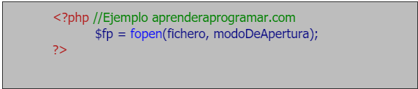
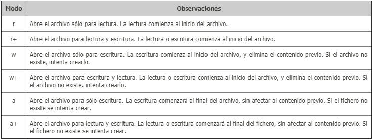
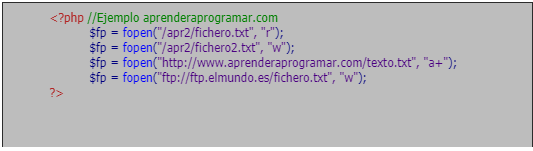
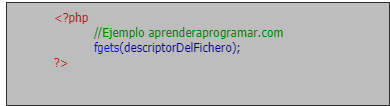
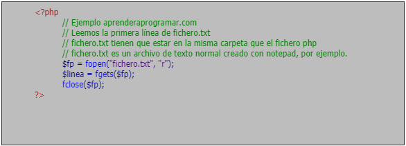
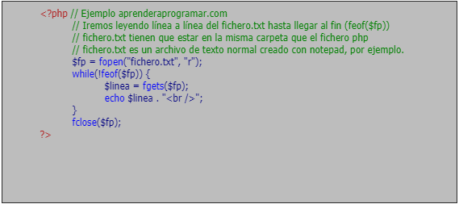
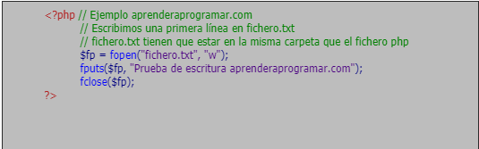

Leer y escribir archivos de texto con PHP. Función fopen (modo), fgets, fputs, fclose y feof
INTRODUCCIÓN AL MANEJO DE ARCHIVOS CON PHP.
Cuando necesitamos crear, guardar, leer o escribir archivos en la creación de sitios web, el manejo de éstos se convierte en una prioridad. Para ello, vamos a ver una serie de funciones y algunos ejemplos para familiarizarnos con el manejo de archivos a nivel básico en php.

FUNCIÓN FOPEN
La función fopen() sirve para abrir ficheros (archivos). Su sintaxis general:

Donde $fp es el descriptor o identificador del fichero abierto que necesitaremos más tarde.
fichero puede ser un archivo de texto, un archivo con extensión .php, o incluso la URL de una página web (por ejemplo http://www.paginaweb.com/). “Abrir” una web con fopen() puede ser muy útil cuando queremos comprobar si la web existe, o si está activa.
Si fichero empieza con "http://", se abre una conexión hacia la web especificada. Siempre debe ponérsele una barra ( / ) al final.
Si fichero empieza con “ftp://", se abre una conexión al servidor especificado.
Si fichero no empieza con ninguna de las cosas anteriormente dichas, se abre una conexión "directa" con el archivo especificado. Si no existe el archivo o dirección especificadas, se devuelve un error.
Hay distintos modos de apertura de archivos, vamos a ver los más habituales.
A la hora de abrir un archivo, hay que saber de qué forma queremos abrirlo. Podemos abrirlo para escritura y lectura, pero de distintas formas:

EJEMPLOS

Ahora bien, con esta simple instrucción sólo tendremos el archivo abierto para leer, escribir, o leer y escribir. Pero ahora tendremos que hacer uso de las otras instrucciones para escribir o recuperar los datos que estimemos oportunos.
FUNCIÓN FCLOSE
La función fclose(identificadorDelFichero) cierra un archivo abierto.
Esta función debe ser utilizada después de abrir y manipular el archivo como veremos en los siguientes ejemplos.
FUNCIONES FGETS Y FEOF
La función fgets() recupera el contenido de una línea de un archivo. Su sintaxis general es:

EJEMPLOS

Ahora bien, con esto sólo leeremos la primera línea del fichero de texto, si quisiéramos leer línea a línea hasta el final necesitaríamos el uso de un bucle while, por ejemplo.

Esto nos mostrará el contenido del fichero de texto línea a línea. Comprobarás que hemos incluido una nueva función denominada feof (que viene significando algo así como file end of file o “marca de final de archivo”). La sintaxis general para esta función es: feof (identificadorDelArchivo)
La función feof nos devuelve true cuando hemos llegado al final de archivo y false si no lo hemos alcanzado todavía. La condición while (!feof($fp)) podríamos haberla escrito también de la siguiente manera: while (feof($fp)==false) . Esta sintaxis es equivalente, puedes utilizar la que prefieras, pero debes acostumbrarte a entender ambas formas de escritura.
Finalmente, fíjate como una vez hemos de terminado de operar con el fichero escribimos la instrucción fclose(identificadorDelFichero) para cerrar la conexión, cosa que debemos hacer siempre.
FUNCIÓN FPUTS
La función fputs() escribe una línea en un archivo. Su sintaxis general es:
EJEMPLO

Fíjate que al realizar la apertura del fichero en modo w, si el fichero no existe, será creado. Fíjate también como una vez hemos de terminado de operar con el fichero escribimos la instrucción fclose(identificadorDelFichero) para cerrar la conexión, cosa que debemos hacer siempre.
Si ahora abrimos el fichero con algún editor de textos como Notepad, Bloc de notas o cualquier otro, veremos lo siguiente:

REF. BIBLIOGRAFICA:
aprender a programar.com (2016). Leer y escribir archivos de texto con PHP. Función fopen (modo), fgets, fputs, fclose y feof. Ejemplo (CU00836B) [Figura]. Recuperado de https://www.aprenderaprogramar.com/index.php?option=com_content&view=article&id=585:leer-y-escribir-archivos-de-texto-con-php-funcion-fopen-modo-fgets-fputs-fclose-y-feof-ejemplo-cu00836b&catid=70&Itemid=193